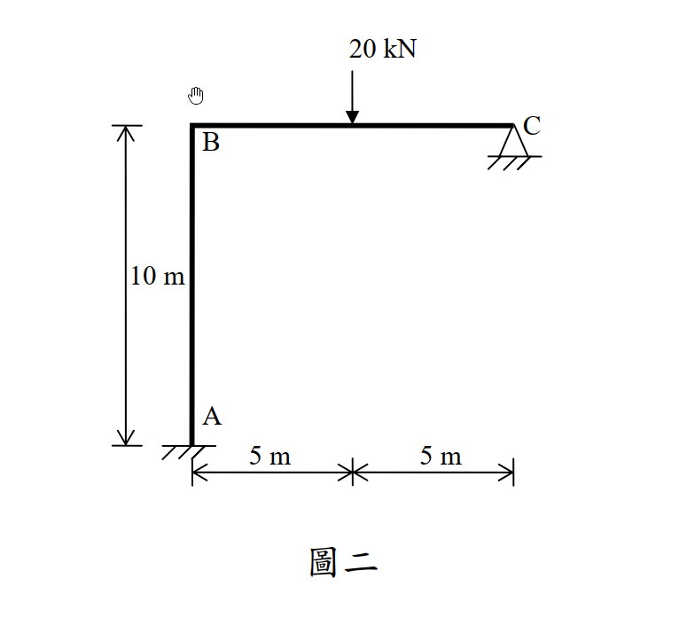

考題編號：SA-2013-2
主分類： SA-U2-1 靜不定結構之能量法
副分類： 無
分析法： 卡氏第二定理 (Castigliano's 2nd Theorem)
標籤： 卡氏定理 靜不定剛架 反力 轉角
1. 原始題目重述 (Problem Restatement)
所示剛架結構 A 為固接支承，C 點為鉸支承。桿件 BC 在中點承受一 20 kN 集中載重，如圖二所示。請應用卡氏定理分析求得 C 點支承之反力與 C 點之轉角。各桿件之 E、I 均相同。使用其他方法不予給分。（25 分）

圖說：A 點為左下角固接支承，連接著長度 10m 的垂直桿 AB。B 點連接長度 10m 的水平桿 BC，C 點為鉸支承 (Pin)。BC 桿中點（距 B、C 各 5m）承受垂直向下的 20 kN 載重。
2. 考題核心精神與出題者意圖 (Core Concepts & Examiner's Intent)
本題旨在測驗考生對卡氏第二定理（最小功法）求解多次靜不定結構的完整掌握度，包含：
- 多餘力設定與系統應變能：A 為固接(3)、C 為鉸支承(2)，共 5 個反力。扣除 3 個靜力平衡方程式，為二次靜不定結構。最俐落的作法是直接將 C 點的兩個支承反力（$C_x, C_y$）設為多餘力，利用 $\frac{\partial U}{\partial C_x} = 0$ 與 $\frac{\partial U}{\partial C_y} = 0$ 解聯立方程式。
- 軸向變形的忽略：題目僅給定 $E, I$ 而未給斷面積 $A$，暗示在剛架的能量法計算中，應忽略軸向應變能，僅計算彎曲應變能。
- 虛擬彎矩的應用：求解 C 點轉角時，需在 C 點施加一虛擬彎矩 $M_C$，再利用 $\theta_C = \frac{\partial U}{\partial M_C}$ 求解。進階技巧在於，因為 $C_x, C_y$ 為多餘力，根據定理，偏微分時可視 $C_x, C_y$ 為定值直接微分，大幅減少代數運算的複雜度。
3. 解題戰略地圖與陷阱分析 (Strategic Roadmap & Trap Analysis)
解題策略：
- 設定未知數與座標系：
- 令 $C_x$ 向左為正，$C_y$ 向上為正。
- BC 桿：以 C 為原點，向左為 $x$ ($0 \le x \le 10$)。
- AB 桿：以 B 為原點，向下為 $y$ ($0 \le y \le 10$)。 -
建立彎矩方程式 $M(x), M(y)$：
切開自由體圖，將內部彎矩以 $C_x, C_y$ 表示。若要在後續求 $\theta_C$，可一併在 C 點加上逆時針的虛擬彎矩 $M_C$ 寫入方程式中。 -
偏微分與能量積分：
- 條件一：$\frac{\partial U}{\partial C_x} = \int \frac{M}{EI} \frac{\partial M}{\partial C_x} ds = 0$
- 條件二：$\frac{\partial U}{\partial C_y} = \int \frac{M}{EI} \frac{\partial M}{\partial C_y} ds = 0$
解此二元一次聯立方程式，得 $C_x$ 與 $C_y$。 -
求解 C 點轉角：
利用 $\theta_C = \int \frac{M}{EI} \frac{\partial M}{\partial M_C} ds$，將剛才解出的 $C_x, C_y$ 數值與 $M_C=0$ 代入積分式中即可。
陷阱分析：
- 積分區間切分：BC 桿在 $x=5$ 處有集中載重，因此在建立力矩方程式與積分時，必須拆分為 $0 \sim 5$ 與 $5 \sim 10$ 兩段，或是使用 Macaulay 括號 $\langle x-5 \rangle$ 處理，否則必定出錯。
- 正負號的一致性：不論彎矩正負號如何定義，只要 $M$ 與偏導數 $\frac{\partial M}{\partial C}$ 使用相同定義，算出的能量偏導皆會正確。但需小心維持上下段的一致。
3.5 變數層次分析 (Variable Hierarchy Analysis)
最終目標
利用卡氏定理找出 C 點反力 Cx, Cy，再求出 C 點轉角 θ_C。
本題關鍵公式與聯立方程式
$\boxed{\cdot}$ = 需由前步驟推導，非題目直接給定的變數
$$\text{BC 桿彎矩: } M_{BC}(x) = \boxed{C_y} x + M_C - P\langle x-5 \rangle$$
$$\text{AB 桿彎矩: } M_{AB}(y) = \boxed{C_x} y + 10 \boxed{C_y} - 100 + M_C$$
L1：題目直接給定
| 符號 | 數值 | 說明 |
|---|---|---|
| $P$ | 20 kN | BC 桿中點向下 집중載重 |
| $L_{AB}$ | 10 m | AB 桿長度 |
| $L_{BC}$ | 10 m | BC 桿長度 |
L2：需知識點推導
| 變數 | 數值 | 說明 |
|---|---|---|
| $\partial M_{BC}/\partial C_x$ | 0 | $C_x$ 不影響 BC 桿彎矩 |
| $\partial M_{AB}/\partial C_x$ | $y$ | AB 桿彎矩對 $C_x$ 的偏導 |
| $\partial M_{BC}/\partial C_y$ | $x$ | BC 桿彎矩對 $C_y$ 的偏導 |
| $\partial M_{AB}/\partial C_y$ | 10 | AB 桿彎矩對 $C_y$ 的偏導 |
| $\partial M / \partial M_C$ | 1 | 全段彎矩對虛擬彎矩的偏導 |
4. 步驟化詳細計算過程 (Step-by-Step Detailed Calculation)
Step 1：定義座標與彎矩方程式
令 $C_x$ 向左為正，$C_y$ 向上為正。並在 C 點施加逆時針虛擬彎矩 $M_C$。
-
BC 桿 ($0 \le x \le 10$，從 C 向 B)：
取右側自由體，內部彎矩設為使底層受拉為正。
$M_{BC}(x) = C_y \cdot x + M_C - 20\langle x-5 \rangle$
(註：$\langle x-5 \rangle$ 在 $x<5$ 時為 0，在 $x \ge 5$ 時為 $(x-5)$) -
AB 桿 ($0 \le y \le 10$，從 B 向 A)：
取上方自由體，內部彎矩設為使左側(外側)受拉為正。
$M_{AB}(y) = C_x \cdot y + C_y \cdot 10 + M_C - 20 \cdot 5 = C_x y + 10 C_y + M_C - 100$
Step 2：卡氏定理聯立方程式
令 $M_C = 0$。最小功原理要求 $\frac{\partial U}{\partial C_x} = 0$ 且 $\frac{\partial U}{\partial C_y} = 0$。
條件一：$\frac{\partial U}{\partial C_x} = 0$
$$\int_0^{10} \frac{M_{BC}}{EI} (0) dx + \int_0^{10} \frac{M_{AB}}{EI} (y) dy = 0$$
$$\int_0^{10} (C_x y + 10 C_y - 100) \cdot y \ dy = 0$$
$$C_x \left[ \frac{y^3}{3} \right]_0^{10} + (10 C_y - 100) \left[ \frac{y^2}{2} \right]_0^{10} = 0$$
$$\frac{1000}{3} C_x + 50 (10 C_y - 100) = 0$$
同除以 50，得方程式 1：
$$\frac{20}{3} C_x + 10 C_y = 100 \Rightarrow 2 C_x + 3 C_y = 30 \quad \text{--- (Eq 1)}$$
條件二：$\frac{\partial U}{\partial C_y} = 0$
$$\int_0^{10} \frac{M_{BC}}{EI} (x) dx + \int_0^{10} \frac{M_{AB}}{EI} (10) dy = 0$$
第一項積分 (BC桿)：
$$\int_0^{10} (C_y x) \cdot x \ dx - \int_5^{10} 20(x-5) \cdot x \ dx$$
$$= C_y \left[ \frac{x^3}{3} \right]_0^{10} - 20 \left[ \frac{x^3}{3} - \frac{5x^2}{2} \right]_5^{10}$$
$$= \frac{1000}{3} C_y - 20 \left[ \left(\frac{1000}{3} - 250\right) - \left(\frac{125}{3} - \frac{125}{2}\right) \right] = \frac{1000}{3} C_y - 20 \left[ \frac{625}{6} \right] = \frac{1000}{3} C_y - \frac{6250}{3}$$
第二項積分 (AB桿)：
$$10 \int_0^{10} (C_x y + 10 C_y - 100) \ dy = 10 \left[ C_x (50) + 10 C_y (10) - 100 (10) \right] = 500 C_x + 1000 C_y - 10000$$
將兩項相加並令為零：
$$\frac{1000}{3} C_y - \frac{6250}{3} + 500 C_x + 1000 C_y - 10000 = 0$$
同乘 3 以去分母：
$$1000 C_y - 6250 + 1500 C_x + 3000 C_y - 30000 = 0 \Rightarrow 1500 C_x + 4000 C_y = 36250$$
同除以 250，得方程式 2：
$$6 C_x + 16 C_y = 145 \quad \text{--- (Eq 2)}$$
Step 3：解聯立方程式求反力
由 (Eq 1) 乘 3：$6 C_x + 9 C_y = 90$。
將 (Eq 2) 減去上式：
$$(16 - 9) C_y = 145 - 90 \Rightarrow 7 C_y = 55 \Rightarrow C_y = \frac{55}{7} \text{ kN} \approx 7.857 \text{ kN (向上)}$$
代回 (Eq 1)：
$$2 C_x + 3\left(\frac{55}{7}\right) = 30 \Rightarrow 2 C_x = \frac{210 - 165}{7} = \frac{45}{7} \Rightarrow C_x = \frac{45}{14} \text{ kN} \approx 3.214 \text{ kN (向左)}$$
Step 4：求 C 點轉角 $\theta_C$
利用卡氏定理：$\theta_C = \frac{\partial U}{\partial M_C} \Big|_{M_C=0}$。由 Step 1 可知兩桿的 $\frac{\partial M}{\partial M_C} = 1$。
$$\theta_C = \frac{1}{EI} \left[ \int_0^{10} M_{BC} \cdot (1) dx + \int_0^{10} M_{AB} \cdot (1) dy \right]$$
將 $M_C = 0$ 代入積分：
$$\int_0^{10} (C_y x - 20\langle x-5 \rangle) dx = C_y(50) - 20\left[ \frac{(x-5)^2}{2} \right]_5^{10} = 50 C_y - 20\left(\frac{25}{2}\right) = 50 C_y - 250$$
$$\int_0^{10} (C_x y + 10 C_y - 100) dy = 50 C_x + 100 C_y - 1000$$
相加：
$$\theta_C = \frac{1}{EI} \left[ 50 C_x + 150 C_y - 1250 \right]$$
代入已解出的 $C_x = \frac{45}{14}$ 與 $C_y = \frac{55}{7} = \frac{110}{14}$：
$$\theta_C = \frac{1}{EI} \left[ 50\left(\frac{45}{14}\right) + 150\left(\frac{110}{14}\right) - 1250 \right] = \frac{1}{EI} \left[ \frac{2250 + 16500 - 17500}{14} \right] = \frac{1}{EI} \left[ \frac{1250}{14} \right] = \frac{625}{7 EI}$$
因為計算結果為正值，表示轉角與設定的 $M_C$ 方向（逆時針）相同。
$$\boxed{\theta_C = \frac{625}{7 EI} \text{ (逆時針方向)}}$$
5. 關鍵爭議點與進階探討 (Critical Issues & Advanced Discussion)
- 傾角變位法驗證：若使用傾角變位法，由於忽略軸向變形，B 點與 C 點之間長度不變，且 C 點水平位移為零，因此 B 點的水平側移 $\Delta = 0$。此時未知數僅有節點 B 的轉角 $\theta_B$。利用平衡方程式 $\sum M_B = 0$ 可求得 $\theta_B = -\frac{375}{7EI}$。再利用半剛接公式求 $\theta_C$，可直接得到 $\frac{625}{7EI}$，此結果與卡氏定理完全吻合，驗證了計算的正確性。
- 多餘力偏導之捷徑：在 Step 4 中，嚴格來說 $C_x, C_y$ 是 $M_C$ 的函數，全微分應包含連鎖律。但根據定理，$\frac{\partial U}{\partial C} = 0$，故連鎖律的後項皆為零。這允許我們在取 $\frac{\partial M}{\partial M_C}$ 時將 $C_x, C_y$ 視為常數，是大幅節省時間的進階技巧。